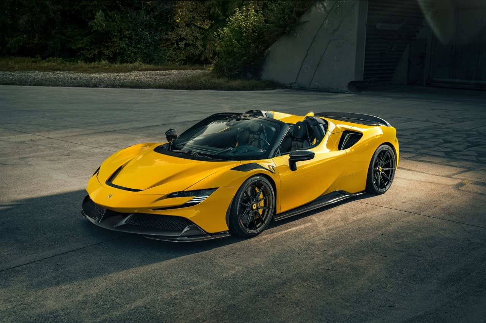

Beskrivning
Vi lever i en intressant era inom motorindustrin. Något som vi ska värna och ta till vara på. Det är nämligen vår generation som sannolikt kommer att få uppleva det absolut bästa som förbränningsmotorn har att erbjuda. Dessutom så får vi vara med om insteget i en ny era. Och mitt i allt detta så levererar några av världens absolut främsta aktörer enastående bilar så som Ferraris SF90.
Det var 2019 som världen först introducerades till Ferraris första serietillverkade PHEV och på ordinär mané så sparade man inte på krutet. Mitt-motor v8an fick inte bara assistans av två turbo aggregat utan här även av tre el-motorer. En i växellådan och två över fram axeln. Sammanlagt så trycker bilen ut strax norr över 1000hk med 800nm. Det är siffror som ger intrycket av att man snubblat över tangentbordet och kommit åt ett tecken för mycket men ingenting kan förbereda dig för hur dessa siffor känns i verkligheten. Stödet från el motorerna eliminerar alla svagheter hos förbränningsmotorn och fyller ut helt med effekt...över allt. I växlingar,i dalar i effektkurvan och så vidare. vilket ger acceleration som är helt hejdlös.
Detta exemplar kvarstår hos sin första brukare och har endast rullat 115mil. Specificerat som en Spider med en diger utrustningslista så sticker denna SF90 ut från mängden framför allt genom sin underbara färgkombination. Exteriören går i Rosso Fiorano 321 och lyfts av sina kontraster i kolfiber detaljer och kontrasterande tak i svart. Hela bilen är skyddad av skyddsfilm från dag ett vilket bibehåller bilen helt felfri. Även invändigt så har utsatta partier och kolfiber detaljer skyddats med PPF. Det är en synnerligen aggressivt formgiven bil som inte alls döljer sina talanger men samtidigt i sann Ferrari anda är enormt vacker.
Insidan kontrasterar exteriören helt men fortfarande i en klassisk färgkombination. Här möter svart läder och kolfiber läder i Beige tradizione 899. En sadelbrun kulör som på ett perfekt sätt ger liv till insidan. Små detaljer som de insydda Cavallino hästarna i nackstöden. Förarmiljön domineras av en display som sköter samtliga av bilens funktioner genom reglage på ratten. En miljö som är helt klädd i kolfiber. Interiören följer samma etos som resten av bilen med funktions fokuserad formgivning. Ett avskalat men vackert genomtänkt upplägg i en symfoni av läder och kolfiber.
Vi menar att SF90 är en modell som vi kommer att titta tillbaka på och fascineras av. En markör i bilindustrins historia där förbränning möter elektrifiering med sitt ända fokus att leverera så mycket körupplevelse som bar möjligt.
Ferrari SF90 Spider Novitech
7,595,500kr